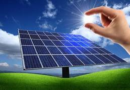

Solar panels offer several advantages, making them an increasingly popular choice for renewable energy generation. Here are some key advantages of solar panels:
DISADVANTAGES:
While solar panels offer numerous advantages, it's important to consider potential disadvantages as well. Here are some common drawbacks associated with solar panels:
- High Initial Cost:
The upfront cost of purchasing and installing solar panels can be relatively high. Although prices have been decreasing, the initial investment may still be a barrier for some individuals or businesses.
Weather Dependency:
Solar panels depend on sunlight to generate electricity, which means their efficiency is influenced by weather conditions. Cloudy days, nighttime, and other factors can reduce energy production, making solar less reliable in certain situations.
- Intermittent Energy Production:
Solar energy production is intermittent, as it relies on daylight hours. Energy storage solutions, like batteries, can help mitigate this issue, but they add to the overall system cost.
- Space Requirements:
Large-scale solar installations, such as solar farms, require significant land area. For individual homeowners, having enough roof space for an optimal solar panel setup might be a limitation.
- Aesthetic Impact:
Some people find solar panels unattractive or disruptive to the aesthetics of buildings or landscapes. This can be a concern, particularly in areas with strict zoning regulations or architectural guidelines.
- Energy Storage Challenges:
Storing excess energy for use during periods of low sunlight can be challenging and may require additional investment in energy storage systems, such as batteries.
- Resource and Energy Intensive Manufacturing:
The production of solar panels involves the use of materials such as silicon, silver, and rare earth metals. The manufacturing process can be resource and energy-intensive, potentially offsetting some of the environmental benefits of solar energy.
- Limited Lifespan:
While solar panels have a long lifespan (typically 25 to 30 years or more), they do degrade over time. This degradation can lead to a decrease in efficiency, and eventually, the need for replacement.
- Geographical Limitations:
Solar energy is not equally distributed across the globe. Regions with less sunlight or frequent cloud cover may not be as suitable for solar power generation.
- Impact on Wildlife:
Large-scale solar installations, such as solar farms, can have environmental impacts on local ecosystems. Changes in land use may disrupt wildlife habitats, and the reflective surfaces of solar panels can affect local fauna.
- E-Waste Concerns:
The disposal of solar panels at the end of their life cycle poses challenges related to electronic waste (e-waste). Proper recycling and disposal methods need to be implemented to minimize environmental impact.
It's important to weigh these disadvantages against the benefits of solar energy and consider advancements in technology, government incentives, and ongoing research that may address some of these concerns in the future. Additionally, site-specific factors, such as climate and available space, can influence the suitability of solar energy in a particular location.

SCHEMES PASSED BY GOVERNMENT FOR SOLAR PANEL INSTALLATION
As of my last knowledge update in January 2022, several government schemes in India have been introduced to promote solar panel installation and boost the growth of the solar energy sector. It's essential to note that government policies and schemes may evolve over time, so it's advisable to check for the latest updates. Here are some notable schemes that were in place:
Pradhan Mantri Kisan Urja Suraksha evam Utthaan Mahabhiyan (PM-KUSUM):
Objective: To support farmers in installing solar pumps and grid-connected solar power plants.
Components:
Installation of standalone solar pumps for irrigation.
Solarization of existing grid-connected agriculture pumps.
Setting up solar power plants on barren/fallow land.
Rooftop Solar Power Plant Subsidy Scheme:
Objective: Encouraging the installation of rooftop solar power plants in residential, institutional, and social sectors.
Components:
Subsidies on the installation cost for residential and institutional consumers.
Support for government and semi-government institutions.
Atal Jyoti Yojana (AJAY):
Objective: To provide solar LED street lighting systems in areas lacking adequate power supply.
Components:
Installation of solar street lights in areas with no access to the grid.
Use of energy-efficient LED bulbs.
National Solar Mission (NSM) - Phase II:
Objective: Expanding the scope of solar power generation in India.
Components:
Setting up large-scale solar parks.
Promoting off-grid solar applications.
Encouraging solar manufacturing in India.
Grid-Connected Rooftop Solar Scheme (Phase-II):
Objective: Promoting the installation of grid-connected rooftop solar systems on residential and institutional buildings.
Components:
Subsidies and incentives for residential consumers.
Support for government and institutional consumers.
Pradhan Mantri Sahaj Bijli Har Ghar Yojana (Saubhagya):
Objective: Ensuring electricity access to all households in the country, including through solar power where grid connectivity is not feasible.
Components:
Electrification of un-electrified households.
Enhancement of solar power capacity in remote areas.
Solar Energy Corporation of India (SECI) Schemes:
SECI has been instrumental in facilitating solar projects and auctions, including schemes for large-scale solar power plants and solar-wind hybrid projects.
State-Specific Solar Policies:
Many Indian states have their own solar policies and incentives to promote solar energy adoption. These may include subsidies, tax benefits, and other support mechanisms.
It's crucial to check the official websites of government agencies such as the Ministry of New and Renewable Energy (MNRE) and state nodal agencies for the most up-to-date information on existing and new schemes. Additionally, the names and details of schemes may change, and new schemes may be introduced to align with evolving energy goals and technologies.